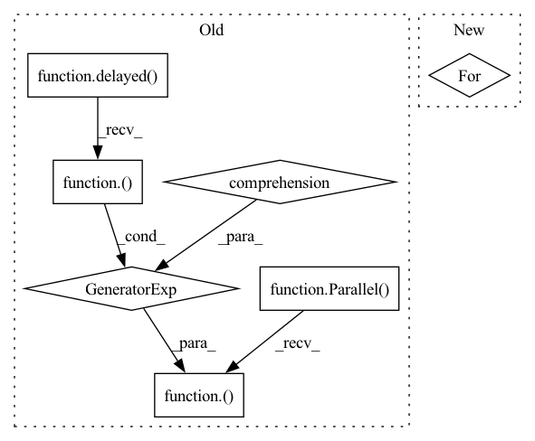

Pattern ID :16441
Before Change
files = sorted(map(lambda x: x.relative_to(current_dir), Path.cwd().rglob("*.py")))
files = list(filter(lambda x: not any([str(Path(ele)) in str(x) for ele in exclude]), files))
return_codes = Parallel(n_jobs=os.cpu_count())( delayed(run_mypy)(file) for file in files)
if all(v == 0 for v in return_codes):
return 0
else:
sys.stderr.write("mypy failed")After Change
// otherwise report.
submodule_name = "innereye-deeplearning"
files = set(current_dir.glob("*.py"))
for path in current_dir.glob("*"):
if path.name != submodule_name:
files.update(path.rglob("*.py"))
file_list = list(files)
return run_mypy(sorted(str(file) for file in file_list))In pattern: SUPERPATTERN
Frequency: 3
Non-data size: 7
Instances Fragment ID: 55242386
Project Name: microsoft/innereye-deeplearning
Commit Name: 1136e23352ac8b4e93705b96bdac9f08120f8399
Time: 2020-08-14
Author: dacart@microsoft.com
File Name: mypy_runner.py
M Class Name: AnonimousClass
N Class Name: AnonimousClass
M Method Name: main(0)
N Method Name: main(0)
M Parent Class:
N Parent Class:
M File Name: mypy_runner.py
N File Name: mypy_runner.py
M Start Line: 19
M End Line: 31
N Start Line: 52
N End Line: 65
Before Change
def multiprocess_evaluation(pred_wavs, target_wavs, lengths):
stoi_scores = Parallel(n_jobs=30)(
delayed(stoi)(clean[0 : int(lens)], enhanced[0 : int(lens)], 16000)
for enhanced, clean, lens in zip(pred_wavs, target_wavs, lengths)
)
pesq_scores = Parallel(n_jobs=30)(
delayed(pesq)(
16000, clean[0 : int(lens)], enhanced[0 : int(lens)], "wb"
After Change
processes = []
pool = multiprocessing.Pool(processes=num_cores)
for clean, enhanced, length in zip(target_wavs, pred_wavs, lens):
processes.append(
pool.apply_async(evaluation, args=(clean, enhanced, int(length)))
)
Fragment ID: 55242387
Project Name: speechbrain/speechbrain
Commit Name: 6df59507d812d8f0cc8000a1e1bd7d239ad5e130
Time: 2020-07-07
Author: plantinga.peter@gmail.com
File Name: recipes/Voicebank/enhance_waveform_map/experiment.py
M Class Name: AnonimousClass
N Class Name: AnonimousClass
M Method Name: multiprocess_evaluation(4)
N Method Name: multiprocess_evaluation(3)
M Parent Class:
N Parent Class:
M File Name: recipes/Voicebank/enhance_waveform_map/experiment.py
N File Name: recipes/Voicebank/enhance_waveform_map/experiment.py
M Start Line: 79
M End Line: 88
N Start Line: 55
N End Line: 73
Before Change
with open(pickle_path, "rb") as f:
fl_2ds = pickle.load(f)
f.close()
Parallel(n_jobs=72)(
delayed(get_heatmap_from_idx)(i, file, fl_2d, target, imgdir) for (i, fl_2d) in enumerate(fl_2ds))
def get_heatmap_from_idx(i, file, fl_2d, target, imgdir):
rgb = np.load(os.path.join(imgdir, os.path.splitext(file)[0], str(i + 1) + ".npy"))After Change
with open(pickle_path, "rb") as f:
fl_2ds = pickle.load(f)
f.close()
for (i, fl_2d) in enumerate(fl_2ds):
get_heatmap_from_idx(i, file, fl_2d, target, imgdir)
def get_heatmap_from_idx(i, file, fl_2d, target, imgdir): Fragment ID: 55242389
Project Name: neelabhsinha/flame
Commit Name: 4b4c3195e26ba19e2e47ed7ff61aa5085021d88a
Time: 2021-10-09
Author: neelabhsinha010@gmail.com
File Name: utils/preprocess.py
M Class Name: AnonimousClass
N Class Name: AnonimousClass
M Method Name: get_and_save_heatmap(1)
N Method Name: get_and_save_heatmap(1)
M Parent Class:
N Parent Class:
M File Name: utils/preprocess.py
N File Name: utils/preprocess.py
M Start Line: 141
M End Line: 162
N Start Line: 141
N End Line: 164